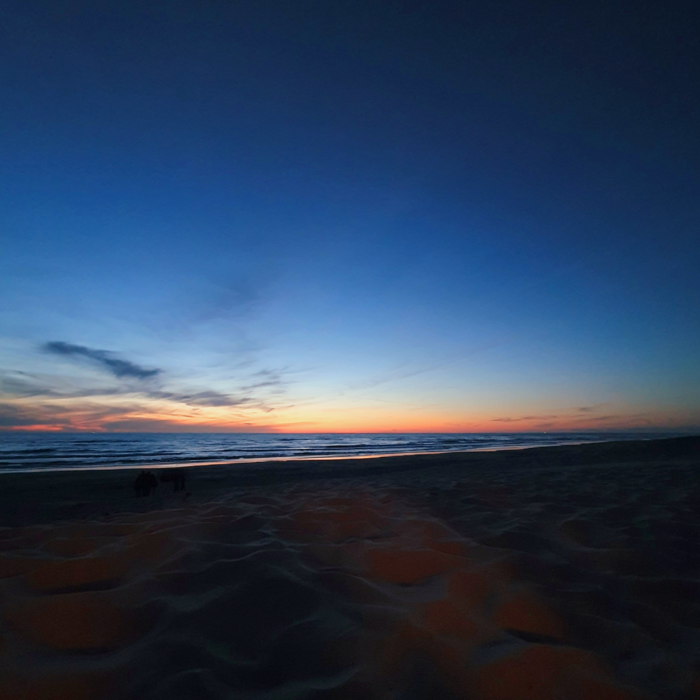
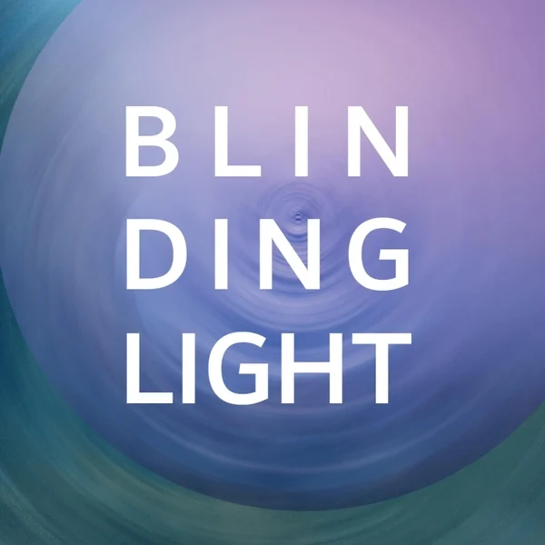

As part of a HKU project, I made this score for the Berlin Film Scoring Contest 2024. I used a
combination of acoustic and electronic sound sources to create an unique sound palette, complementing
the visual elements in the film. Although there isn't a melodic motive in this score, the motive is hidden
in the instruments and sounds themselves. The piano represents realism and the nature like feel in the film. Different
synths and strings represent the adventurous theme. The sounds are arranged to mimic the feeling of intimacy, next to the feeling of magnificene happening in the film.
Comprovisation
2024

This piece was made out of a single recording. I utilised a set of pre made instructions to conduct a
small
ensemble. The instructions were made to guide the ensemble during their improvisation. This way we
composed a new piece on the spot. The recording of this improvisation session was later used to
create new sounds for the final composition. Some of these sounds are very abstract, it's hard to
tell
they are made out of the recording. However, other sounds are directly related to the original source.
This creates
a feeling of flashbacks in a dreamy setting.
Blinding Light
2022

Blinding Light is my first single release. I used a combination of sampled and recorded instruments, as
well as a combination of acoustic and electronic sounds. The piano was recorded at double speed and
later slowed down to create an unique tone character. After the first part of the track was done, I
sampled it and used chops of the song to construct the final part of the arrangment.